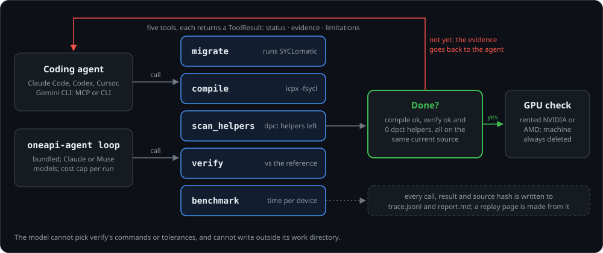

Evidence-first tools that help coding agents finish CUDA → SYCL ports, and prove them.
CUDA
your kernels
migrate
SYCLomatic
compile
icpx -fsycl
scan_helpers
0 dpct left
verify
vs reference
GPU check
NVIDIA · AMD
Done only when verify passes and scan_helpers finds zero dpct helpers, on the same freshly compiled source.
python3.11+
licenseAGPL-3.0 | commercial
version{{VERSION}}
Open-source software Press kit{{ARTIST}} {{YEAR}}
What it is
Intel's SYCLomatic gets CUDA code most of the way to SYCL, an open standard not tied to NVIDIA. oneapi-agent-toolkit gives a coding agent the tools to finish that port and prove it: a port counts as done only when its output matches the original and no SYCLomatic helpers remain.
The toolkit is a Python package with five tools: migrate, compile, scan_helpers, verify and benchmark. Each returns evidence rather than a claim: a status, the exact commands that ran, parsed diagnostics, numbers and a list of limitations. Agents reach the tools through an MCP server, a command line that prints the same results, or a bundled agent loop that enforces the "done" rule itself. A GPU command rents a machine on one of four clouds, checks the port against the original CUDA built there, and deletes the machine.
The problem it answers was observed in the repository's own examples. On HeCBench's softmax, SYCLomatic produced code that compiled with zero warnings but had silently swapped expf for a reduced-precision function: 22,156 of 524,288 outputs were wrong on an AVX-512 CPU. Only running the code and comparing outputs caught it. Coding agents asked to finish such ports tend to stop as soon as the code compiles.
In 120 measured runs with two Claude models, agents using the toolkit finished every port correctly and with no helpers left (40 of 40). The same agents without its checks managed 23 of 40, and 14 of 40 when given only a shell.
Stage: version {{VERSION}}, a working research tool, not yet on PyPI. The first commit is dated 15 October 2026. All measured ports were made by the bundled loop with Claude models and graded on a CPU, on small single-file programs: indicative, not a benchmark. Intel GPUs have not been tested. It has since been superseded by Muse Port, which still installs it as a dependency; new work happens there.
Used in Muse Port. Muse Port, by the same author, installs this toolkit as a pinned dependency for its tools, agent loop and GPU tests. Muse Port was built during the Meta Global AI Developer Hackathon 2026 and submitted there. The toolkit's state before the event is the git tag pre_hackathon; the 11 changes made to it for Muse Port are listed in Muse Port's repository.
TO CONFIRM (Checo): the repository shows no outside users, adoption or press. Add any that exist, or leave this kit as is.
oneapi-agent-toolkit2
How it works

migrate runs SYCLomatic and parses every warning, with the file and line in both the CUDA and the migrated code.
compile builds with Intel's icpx -fsycl and returns each diagnostic as data.
scan_helpers counts the dpct:: helpers SYCLomatic leaves behind, by kind and file, with the plain SYCL to replace each, and flags risky patterns such as reduced-precision math.
verify runs the reference and the port on the same inputs and compares the outputs: error statistics for arrays, or a null test in dBFS for audio.
benchmark times a program on each SYCL device it finds and reports the raw samples.
Honest failures. If a compiler is missing, the result says toolchain_missing and names the command that could not run. Nothing is faked.
The loop.oneapi-agent loop lets a model call the tools until compile, verify and a zero-helper scan all hold on the same source. The model cannot choose verify's commands or tolerances, and each run has a cost cap.
GPU check.remote-test rents a GPU on Runpod, Vast.ai, Vultr or DigitalOcean, builds the original CUDA there, verifies the port against it and deletes the machine.
oneapi-agent-toolkit3
Results so far
From the repository's README and docs folder, as of {{CHECKED}}. Every number links there to the committed traces and sources.
With vs without
4 workloads, Claude Sonnet and Haiku, 5 runs each, 120 runs in all. Correct and helper-free: toolkit 40/40, no checks 23/40, a shell only 14/40.
Unseen programs
5 HeCBench programs the agent had never seen, 90 runs: toolkit 30/30, no checks 18/30, a shell only 17/30.
On real GPUs
The agent's ports, unedited: 10/10 pass against the C++ reference and the original CUDA built on the same GPU, 5 on NVIDIA and 5 on an AMD Instinct MI350X.
Why checks matter
Without checks, agents shipped wrong output in 6 of 40 runs, including a softmax port that compiled cleanly and got 332,679 of 524,288 outputs wrong. With a shell, none did, but helpers stayed in 26 of 40 runs.
Cost
About the same as without: $1.37 vs $1.23 for 20 Sonnet runs.
Original examples
Claude Sonnet ported all 4 original examples to success, in 5 to 8 iterations, for $0.067 to $0.082 each. One run per example.
Hardware
Ports checked on nine NVIDIA GPU types and an AMD MI350X. On the MI350X, an in-order queue cut the softmax port's cost per launch from 114.6 to 24.4 µs (the original CUDA, converted for AMD: 8.9 µs).
Upstream
Two build bugs in Intel's open-source compiler for AMD GPUs reported as intel/llvm#23531 and #23532.
Honest limits. Only Claude models from one vendor were measured, with 3 to 5 runs per cell, on small single-file programs, graded on a CPU: indicative, not a benchmark. No port made by an outside agent over MCP has been measured; only the registration was checked. GPU kernel timings are single small launches, not a speed claim. Intel GPUs are untested.
oneapi-agent-toolkit4
Images
1 · The README banner, redrawn for 16:92 · With and without the toolkit's checks3 · Replay: a run without the toolkit, every step OK, then the hidden check fails
Supplied as 3840 × 2160 JPEGs with this kit. Image 1 is the project's README banner, redrawn. Image 2 is a new chart of the README's results. Image 3 is the project's own replay page, re-rendered at high resolution.
TO CONFIRM (Checo): no photo of the author and no video of the toolkit itself. Add a portrait if the kit needs one.
oneapi-agent-toolkit5
Setup and links
Install
git clone https://{{REPO_URL}} cd oneapi-agent-toolkit && pip install -e ".[all]" Python 3.11 or later.
Try in a minute
scripts/demo.sh runs the agent loop end to end with canned tool results, marked MOCK. No toolchain, no API key.
Toolchain
For the real tools: Intel's icpx and SYCLomatic, installed by scripts/install-toolchain.sh. Without them each tool says toolchain_missing.
Agents
oneapi-agent setup registers the MCP server with Claude Code, Codex, Cursor and Gemini CLI. Other agents can use the CLI (AGENTS.md).
Model and GPUs
An Anthropic or Meta Model API key for the loop. A Runpod, Vast.ai, Vultr or DigitalOcean key for GPU runs.
Used in
Muse Port, by the same author: {{MUSEPORT_URL}}
License
AGPL-3.0. Commercial licenses are offered for closed-source use (see the README). Versions up to commit b08b687 were released under MIT.
TO CONFIRM (Checo): the package is not on PyPI yet (the release workflow waits for a PyPI trusted publisher). Publish before sending, or keep "not yet on PyPI".
Builds on SYCLomatic (Intel), the Intel oneAPI DPC++/C++ compiler and HeCBench programs. Design inspired by REA. oneapi-agent-toolkit is an independent project and is not affiliated with Intel, NVIDIA, AMD, Anthropic or Meta.